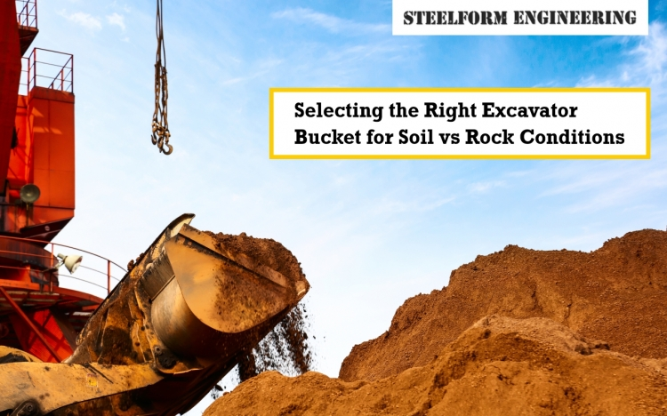

If you are using heavy machinery, then the excavator bucket is certainly your main equipment. However, not all buckets are the same. Selecting a poorly suited bucket for soft earth when you have hard, abrasive material can change the outcome of your work, the amount of fuel that you consume, and the place where your equipment will wear and tear. As engineers and site managers, it is very essential for you to know the distinction between the choice of an excavator bucket for soil and that for rock as a matter of efficiency and control of costs.
At Steelform Engineering, we understand that maximising performance starts with the right attachment. Let’s take a look at how bucket design, materials and features change from using a general excavator bucket in a soil situation to moving to a heavy-duty excavator bucket for rock excavation.
When using an excavator bucket with soft materials like topsoil, clay, sand or loose gravel, the aim is to move as much material as possible for quick cycle times. Soil buckets (or General Purpose or GP buckets) are designed around volume and speed.
Key Characteristics:
When you are dealing with abrasives such as solid rock, shale, high-density concrete or a blasted quarry, you must have a bucket that is designed to take the assault. The changes made focus on durability, penetration, and resistance to wear instead of sheer volume.
Key Characteristics:
While figuring out how to choose an excavator bucket for your upcoming work, don't forget to ask your supplier these four very important questions so that you get the right tool:
What Steel Grade Is Used?
Reason: If the bucket is for use with rock, you have to make sure that not only is the steel of high strength and high hardness, but also the surface is abrasion resistant (AR) and that the bucket shell and wear plates are made of the same (e.g., AR400 or higher).
What Wear Parts are There?
Reason: Besides the replacement of side cutters and bottom wear strips that should be made of a hardened material, thus prolonging the lifetime of the main structure of the bucket, check if they are also easy and quick to replace.
What is the Tooth System?
Reason: One of the possible ways to get better penetration of a rock excavator bucket is by using the proper tooth shapes. So, for an accurate and easy maintenance performance, ask for the system brand and style (e.g., "pin-on" vs. "hammerless" system).
What Reinforcement is There?
Reason: Find extra gussets and heavy welding along the heel, lip shroud, and sideplates. This strengthening is what helps the device to resist bending and breakage situations when it is used for solid rock digging.
Successfully selecting the right excavator bucket is key to working through challenging site conditions: soils vs rocks. A GP bucket being used for rock will get very expensive, and using a rock excavator bucket that is oversized for soils may not be the most efficient or productive. By learning how these differences manifest in construction, such as steel grade, wear parts, tooth system, and structural reinforcement, you can make an informed review of your excavator bucket choices that will positively affect your productivity and bottom line.
Need more qualified help selecting excavator bucket attachments that will meet your machine and job requirements perfectly?
Contact Steelform Engineering today. We specialise in engineering and fabricating heavy-duty attachments and can help you choose a perfect excavator bucket that is built for soil conditions, including the toughest rock excavator bucket to be used on it for a lasting investment.